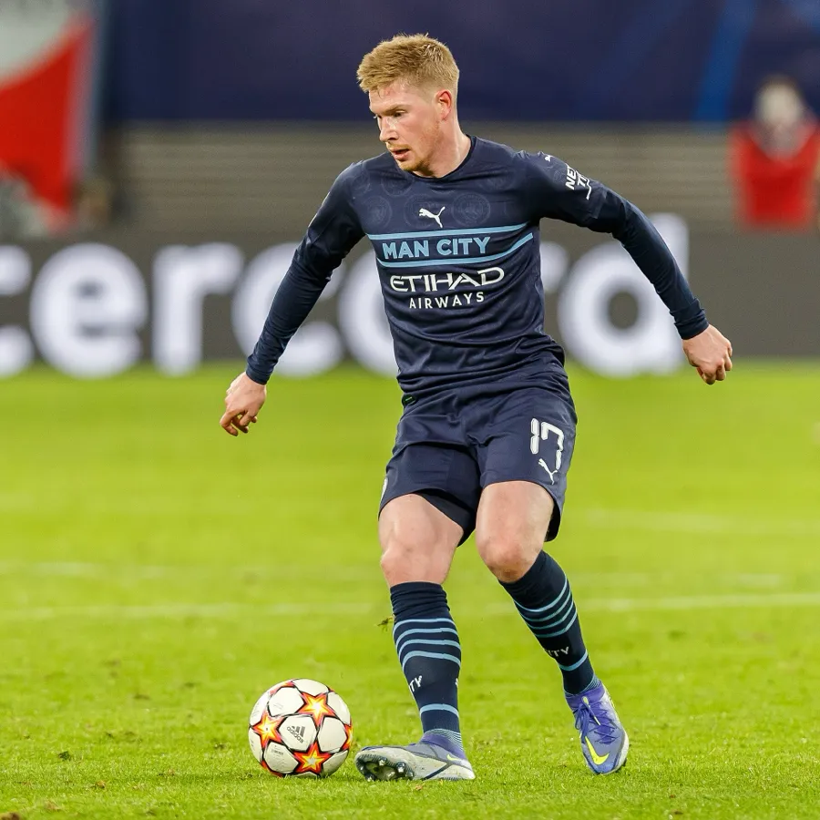

About the Photo
De Bruyne is driving forward in Manchester City's navy away kit with the Champions League ball at his feet and his head up. The bright green grass fills most of the frame and the advertising boards behind him are blurred into streaks. This one is square, 900 by 900 pixels, and only 73 KB.
About the WebP Format
WebP is a newer format made by Google specifically for the web.
- Colors: about 16.7 million
- Compression: both — it can be saved lossy like a JPG or lossless like a PNG
- Transparency: supported, and it works in lossy mode too, which PNG cannot do
- Animation: supported, so it can replace an animated GIF
This is the clearest example on the site of why WebP matters. It has the most pixels of the three images because it is square, and it is still the smallest file at 73 KB — smaller than the JPG and about twelve times smaller than the PNG, with no difference I can see on screen.
Why I Chose Him
De Bruyne plays the way I played as a midfielder, just far better at it. The precise long-range passing, starting fast counters, reading space before anyone else does — that is the part of the game I care about most. His ball striking and long-range goals are what make him my favorite player to actually watch.
Source
- Photographer: Steffen Prößdorf
- License: CC BY-SA 4.0
- Original file: Wikimedia Commons
Changes I made: resized to 900 pixels wide and converted to WebP.